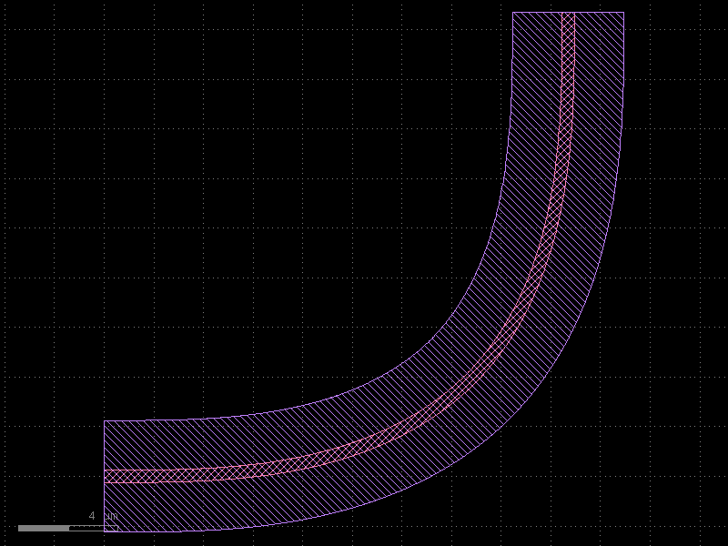
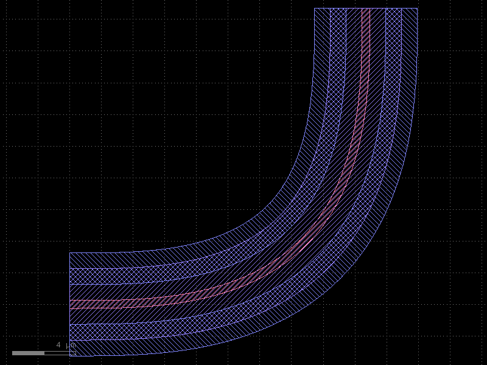
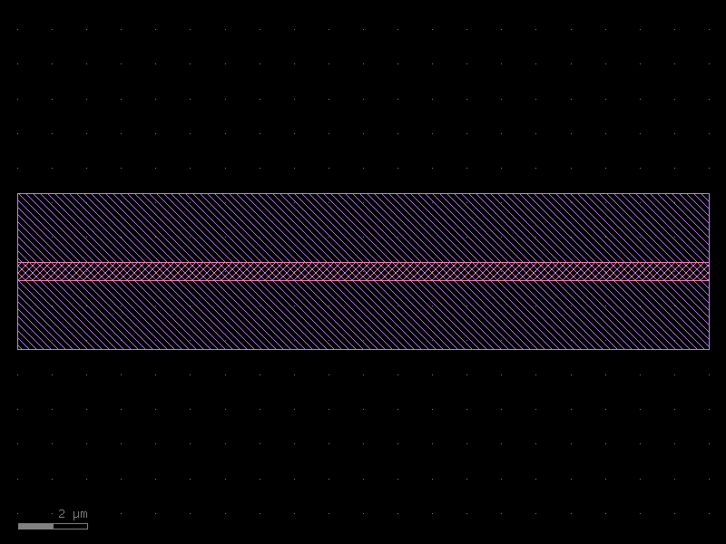
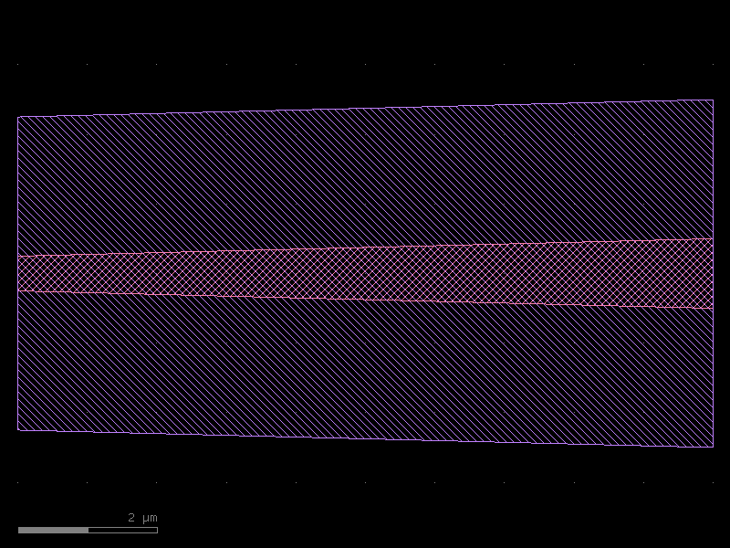
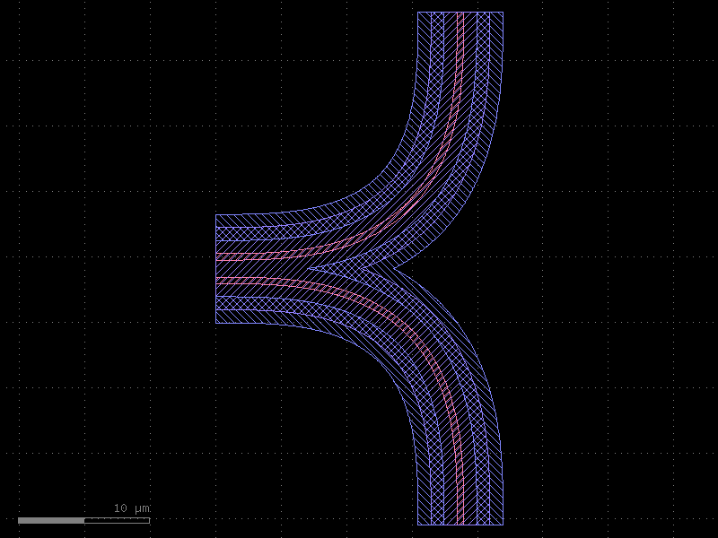

Layer Enclosures
An enclosure defines how additional layers are generated around a core shape. Common uses include:
- Slab / cladding — oxide or slab that surrounds a waveguide core.
- Doping regions — implant layers offset from a rib waveguide.
- Keep-out zones — exclusion regions around metal traces.
- Floorplan — bounding-box expansions that pad a component's outline.
kfactory implements two enclosure classes:
| Class | Applies to |
|---|---|
LayerEnclosure |
A single layer's geometry on a component |
KCellEnclosure |
An entire assembled KCell (merges sub-cell geometries) |
LayerEnclosure is the building block; KCellEnclosure wraps one or more
LayerEnclosure objects and applies them to a finished cell as a post-processing step.
Setup
import kfactory as kf
class LAYER(kf.LayerInfos):
WG: kf.kdb.LayerInfo = kf.kdb.LayerInfo(1, 0)
WGCLAD: kf.kdb.LayerInfo = kf.kdb.LayerInfo(2, 0)
SLAB: kf.kdb.LayerInfo = kf.kdb.LayerInfo(3, 0)
NPP: kf.kdb.LayerInfo = kf.kdb.LayerInfo(4, 0)
METAL: kf.kdb.LayerInfo = kf.kdb.LayerInfo(10, 0)
METALEX: kf.kdb.LayerInfo = kf.kdb.LayerInfo(10, 1)
L = LAYER()
kf.kcl.infos = L
1 · Simple uniform expansion — cladding
The most common enclosure is a single layer that expands symmetrically around the waveguide core.
sections = [(target_layer, expansion_dbu)]
A 2 µm WGCLAD around a WG core (1 nm/DBU → 2 µm = 2 000 DBU):
clad_enc = kf.LayerEnclosure(
sections=[(L.WGCLAD, 2_000)], # 2 µm cladding in DBU
name="WGSTD",
main_layer=L.WG,
)
# Create an Euler bend with cladding applied.
bend_with_clad = kf.factories.euler.bend_euler_factory(kcl=kf.kcl)(
width=0.5,
radius=10,
layer=L.WG,
enclosure=clad_enc,
angle=90,
)
bend_with_clad.plot()

The WG core (layer 1/0) is drawn by the cell itself; the WGCLAD (layer 2/0) is automatically computed as the Minkowski expansion of the WG shape.
2 · µm-based sections with dsections
Specifying DBU manually is error-prone when the grid resolution may change.
Use dsections= together with kcl= to specify distances in micrometres:
clad_enc_um = kf.LayerEnclosure(
dsections=[(L.WGCLAD, 2.0)], # 2 µm — converted to DBU automatically
name="WGSTD_UM",
main_layer=L.WG,
kcl=kf.kcl,
)
bend_um = kf.factories.euler.bend_euler_factory(kcl=kf.kcl)(
width=0.5,
radius=10,
layer=L.WG,
enclosure=clad_enc_um,
angle=90,
)
bend_um.plot()

3 · Multi-layer enclosures
A single LayerEnclosure can drive multiple output layers. Each tuple in
sections specifies one rule.
Two-element tuple — symmetric expansion
(layer, d_max) # expands by d_max DBU on all sides
Three-element tuple — annular (ring) region
(layer, d_min, d_max) # inner edge at d_min, outer edge at d_max
This is useful for doping layers that must stay a minimum distance from the waveguide edge:
# SLAB: 2 µm uniform cladding.
# NPP: implant ring, 1 µm from WG edge to 3 µm from WG edge.
doped_enc = kf.LayerEnclosure(
dsections=[
(L.SLAB, 2.0), # 0 → 2 µm
(L.NPP, 1.0, 3.0), # 1 → 3 µm (annular ring)
],
name="SLAB_DOPED",
main_layer=L.WG,
kcl=kf.kcl,
)
bend_doped = kf.factories.euler.bend_euler_factory(kcl=kf.kcl)(
width=0.5,
radius=10,
layer=L.WG,
enclosure=doped_enc,
angle=90,
)
bend_doped.plot()

Three layers are now present: - WG (core waveguide) - SLAB (uniform 2 µm expansion) - NPP (annular implant from 1 µm to 3 µm outside the WG edge)
4 · Enclosures on straight waveguides and tapers
Enclosures work on any component factory that accepts an enclosure= argument.
straight_with_enc = kf.factories.straight.straight_dbu_factory(kcl=kf.kcl)(
width=kf.kcl.to_dbu(0.5),
length=kf.kcl.to_dbu(20),
layer=L.WG,
enclosure=clad_enc,
)
straight_with_enc.plot()

taper_with_enc = kf.factories.taper.taper_factory(kcl=kf.kcl)(
width1=kf.kcl.to_dbu(0.5),
width2=kf.kcl.to_dbu(1.0),
length=kf.kcl.to_dbu(10),
layer=L.WG,
enclosure=clad_enc,
)
taper_with_enc.plot()

5 · KCellEnclosure — cell-level enclosures
When a cell contains multiple sub-components, applying a LayerEnclosure to each
sub-component separately leaves gaps at the joins. KCellEnclosure.apply_minkowski_tiled
operates on the merged geometry of the finished cell, producing a single continuous
enclosure.
Example: two-bend cell with unified cladding
kcell_enc = kf.KCellEnclosure([doped_enc])
@kf.cell
def two_bends(
radius: float,
width: float,
layer: kf.kdb.LayerInfo,
enclosure: kf.KCellEnclosure | None = None,
) -> kf.KCell:
"""Two euler bends joined at their West ports, with optional cell-level enclosure."""
c = kf.KCell()
b1 = c << kf.factories.euler.bend_euler_factory(kcl=kf.kcl)(
width=width, radius=radius, layer=layer, angle=90
)
b2 = c << kf.factories.euler.bend_euler_factory(kcl=kf.kcl)(
width=width, radius=radius, layer=layer, angle=90
)
# Place b2 rotated 90° below b1
b2.drotate(90)
b2.dmovey(-radius * 2 - width)
b2.dmovex(b2.dxmin, 0)
c.add_ports(b1.ports)
c.add_ports(b2.ports)
c.auto_rename_ports()
if enclosure:
enclosure.apply_minkowski_tiled(c)
return c
c_two = two_bends(radius=10, width=0.5, layer=L.WG, enclosure=kcell_enc)
c_two.plot()
[32m2026-05-05 10:52:48.502[0m | [31m[1mERROR [0m | [36mkfactory.kcell[0m:[36mname[0m:[36m700[0m - [31m[1mName conflict in kfactory.kcell::name at line 700
Renaming Unnamed_12 (cell_index=12) to bend_euler_W0p5_R10_LWG_ENone_A90_R150 would cause it to be named the same as:
- bend_euler_W0p5_R10_LWG_ENone_A90_R150 (cell_index=11), function_name=bend_euler, basename=None[0m

Notice that the SLAB and NPP layers form a single, continuous region around both
bends, with no gap between them — this is the key advantage of KCellEnclosure over
per-component enclosures.
6 · SymmetricalCrossSection — reusable cross-section
For photonic PDKs, you typically want to encode the waveguide width, cladding, and
bend radius as a named, reusable object. SymmetricalCrossSection bundles a width
(in DBU) with a LayerEnclosure into a single immutable value.
from kfactory.cross_section import SymmetricalCrossSection
wg_xs = SymmetricalCrossSection(
width=kf.kcl.to_dbu(0.5), # 500 nm core
enclosure=clad_enc,
name="WG_STD",
)
print(f"name: {wg_xs.name}")
print(f"width (DBU): {wg_xs.width}")
print(f"width (µm): {kf.kcl.to_um(wg_xs.width):.3f}")
print(f"main_layer: {wg_xs.main_layer}")
name: WG_STD
width (DBU): 500
width (µm): 0.500
main_layer: WG (1/0)
The cross-section is used by routing functions to automatically configure the straight factory width and bend radius. See the Routing section for examples.
Summary
| Concept | Class | Key parameter |
|---|---|---|
| Uniform cladding | LayerEnclosure |
sections=[(layer, d_max)] |
| Ring / annular region | LayerEnclosure |
sections=[(layer, d_min, d_max)] |
| µm-specified distances | LayerEnclosure |
dsections= + kcl= |
| Cell-level merged enclosure | KCellEnclosure |
.apply_minkowski_tiled(cell) |
| Reusable width + enclosure | SymmetricalCrossSection |
width=, enclosure= |
The typical PDK workflow is:
1. Define a LayerEnclosure for each waveguide type (strip, rib, metal, …).
2. Wrap it in a SymmetricalCrossSection with the nominal width and bend radius.
3. Pass the cross-section to routing functions — they handle everything else.
See Also
| Topic | Where |
|---|---|
| Cross-sections (port geometry) | Cross-Sections |
| Cell-level enclosures (tiling) | Enclosures: KCell Enclosure |
| Straight waveguide (uses enclosure) | Components: Straight |
| Width tapers (uses enclosure) | Components: Tapers |